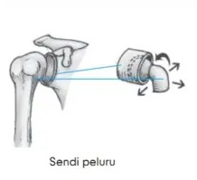
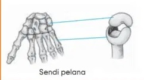
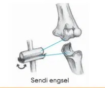
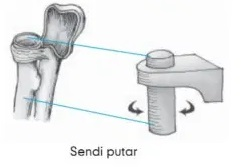
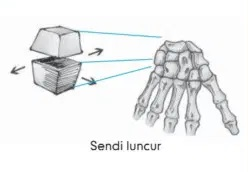
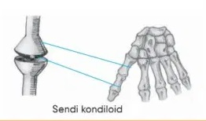

Diartrosis adalah hubungan antartulang yang memungkinkan terjadinya gerakan tulang secara lebih bebas. Jenis hubungan antartulang bersifat diartrosis adalah sebagai berikut :
1. Sendi Peluru, memungkinkan gerak kesemua arah (berporos tiga) karena ujung tulang berbentuk bulat lekuk dan cembung.
Contoh : sendi antara tulang gelang bahu dengan lengan atas, sendi antara gelang panggul dan paha.

2. Sendi Pelana, memungkinkan gerak seperti bentuk pelana kuda (berporos dua) karena ujung tulang berbentuk pelana kuda cekung dan cembung
Contoh : sendi antara tulang telapak tangan dengan pergelangan tangan dan ruas-ruas jari.

3. Sendi Engsel, memungkinkan gerak seperti engsel (berporos satu)
Contoh : sendi pada siku, lutut, mata kaki, dan ruas antar jari.

4. Sendi Putar, memungkinkan gerak rotasi antar tulang (berporos satu) karena ujung tulang yang satu dapat mengitari tulang lainnya
Contoh : sendi antara tulang rasta dengan pengumpil, antara tulang atlas dengan tulang tengkorak.

5. Sendi Geser/Luncur, memungkinkan gerak bergeser (tidak berporos) karena permukaan kedua tulang relatif rata
Contoh : sendi antara tulang pergelangan tangan dan kaki, sendi antara tulang selangka dan tulang belikat.

6. Sendi kondiloid/elipsoid, memungkinkan terjadinya gerakan ke kiri-kanan dan depan-belakang (berporos dua) karena ujung tulang berbentuk oval cembung dan cekung.
Contoh : sendi antara tulang pengumpul dengan pergelangan tangan.
